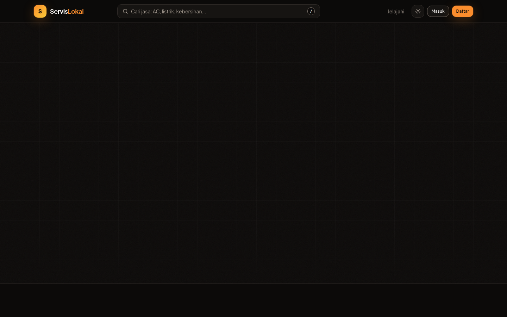
Baca halaman ini saja untuk memahami seluruh dokumen — halaman berikutnya adalah bukti, satu per satu.
Mencari tukang & jasa di Indonesia masih lewat grup WhatsApp: tidak ada harga, tidak ada rating, dan penyedia dari kota kecil tidak terlihat secara nasional.
Marketplace jasa lokal dengan filter 38 provinsi, rating terverifikasi, status pesanan real-time, dan 3 dashboard per role — live di Vercel, bukan mockup.
Kalimat kunci: “JASAKITE membuat jasa lokal daerah terlihat secara nasional — dengan bukti yang bisa diuji langsung oleh juri.”
| Bagian | Halaman | Isinya dalam 1 kalimat |
|---|---|---|
| Masalah & Persona | Hal. 3 | Kenapa produk ini ada — 3 pain point + 3 persona nyata. |
| User Experience (30%) | Hal. 4–5 | Perjalanan pengguna tanpa jalan buntu + bukti keandalan 16 rute. |
| User Interface (25%) | Hal. 6 | Sistem desain konsisten: token, tipografi, motion. |
| Kreativitas (15%) | Hal. 7 | 7 inovasi + terjemahan bebas untuk non-teknis. |
| Skor & Demo (10%) | Hal. 8 | Self-assessment 87/100 + rencana demo 5 menit. |
| Teknis & Dampak | Hal. 9–10 | Arsitektur, keamanan, dampak sosial, roadmap. |
| Lampiran Bukti | Hal. 11–14 | Screenshot live + file:baris untuk tiap kriteria. |
Tips presentasi: 30 detik per halaman utama = 5 menit. Jika juri bertanya lebih dalam, buka lampiran bukti — setiap klaim punya screenshot + lokasi file.
Latar belakang. Mencari tukang, AC service, atau jasa bersih di Indonesia masih mengandalkan grup WhatsApp dan mulut-ke-mulut. Risiko besar menghantari kedua sisi: pelanggan takut ditipu, penyedia jasa kesulitan mendapat order.
Tidak ada transparansi harga. Pelanggan harus bertanya satu per satu ke banyak tukang hanya untuk mengetahui kisaran harga wajar.
Tidak ada riwayat rating dan ulasan. Pelanggan menyerahkan kunci rumah kepada orang asing tanpa jejak reputasi apa pun.
Penyedia jasa di kota kecil seperti Pangkal Pinang hanya mengandalkan spanduk — tidak ditemukan pencarian nasional.
| Persona | Kebutuhan | Solusi JASAKITE |
|---|---|---|
| Citra, 28 Ibu RT, Bangka Belitung | Perlu jasa bersih rumah mingguan, takut provider tidak datang atau hasil buruk. | Rating & ulasan terverifikasi, timeline status pesanan, chat langsung. |
| Hendri, 35 Provider, Pangkal Pinang | Sepi order, hanya mengandalkan spanduk dan jaringan kenalan. | Dashboard kanban kelola pesanan, profil publik, jangkauan nasional. |
| Sari, 22 Mahasiswa, Bandung | Butuh service AC kos cepat, ingin membanding harga sebelum memesan. | Katalog dengan filter kategori + lokasi, harga jelas, checkout 2 langkah. |
JASAKITE adalah marketplace jasa lokal dengan 3 dashboard per role (Pelanggan, Penyedia, Admin): pencarian berbasis lokasi 38 provinsi, sistem rating & ulasan terverifikasi, status pesanan real-time dengan FSM, dan komunikasi langsung pelanggan–penyedia. Fokus: membuka akses pasar nasional bagi UMKM jasa daerah.
UX adalah kriteria terbesar. Seluruh perjalanan pengguna — dari mencari jasa hingga memberi ulasan — dirancang tanpa jalan buntu, dengan feedback di setiap langkah.
| Lapisan | Implementasi | Cakupan |
|---|---|---|
| Loading | Skeleton skeleton di semua rute + animasi crossfade skeleton → konten (tanpa “pop” kasar). | 16 rute |
| Error | Error boundary per rute dengan tombol Retry, pesan ramah, bukan layar putih. | 16 rute |
| Offline | Service worker (PWA) + banner indikator offline; form tetap ter-cache. | Seluruh situs |
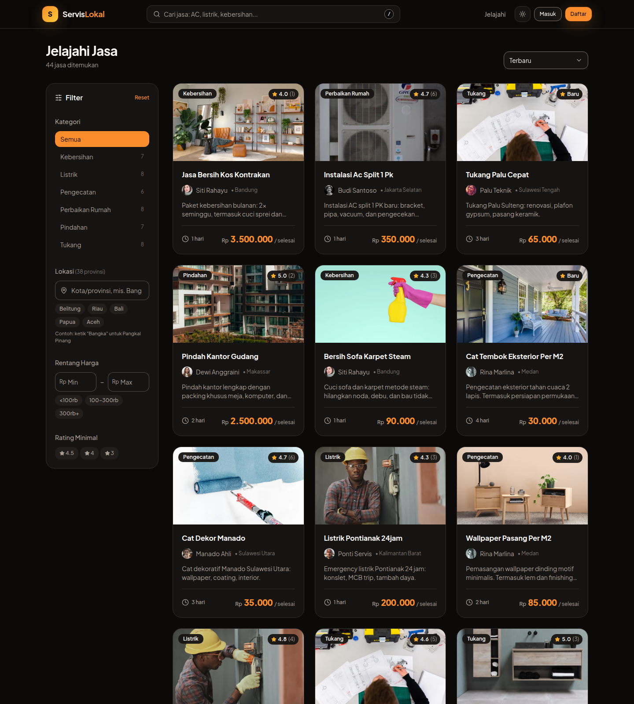
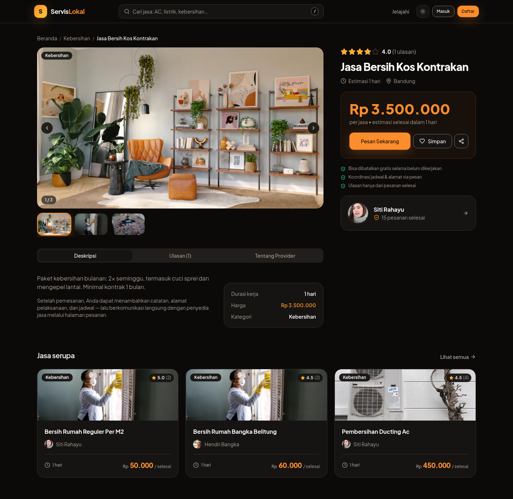
| Aspek | Bukti | Status |
|---|---|---|
| Kontras warna | primary-strong 5.0:1, teks di dark mode diuji | Lulus AA |
| Keyboard | Semua modal focus-trapped (Radix), tab order logis | Lulus |
| Screen reader | aria-live untuk notifikasi & status dinamis, label form eksplisit | Lulus |
| Motion | prefers-reduced-motion menonaktifkan animasi orb & transisi | Lulus |
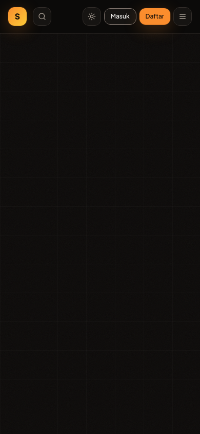
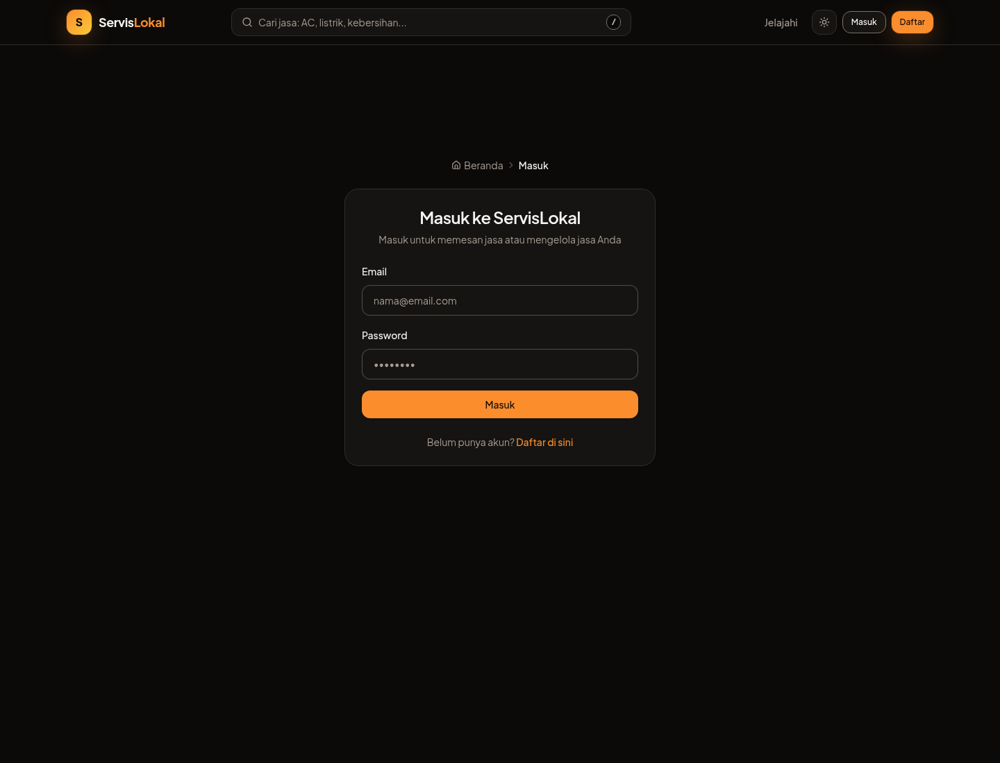
Hasil: 10/10 dimensi UX dinilai ≥ 7 — navigasi 9, form 9, loading 9, error handling 9, search 9, aksesibilitas 8, mobile 8, onboarding 8, notifikasi 8, offline 7. Estimasi skor UX: 26/30.
Sistem desain yang konsisten: satu bahasa visual untuk 3 dashboard, katalog, dan alur checkout — bukan sekadar halaman yang “dihias” satu per satu.
Primary #F97316 (oranye hangat — kepercayaan & energi UMKM)
Dark #0B0A09 · Krem #FBFAF8
Kontras primary-strong: 5.0:1 (melebihi WCAG AA 4.5:1)
Token HSL penuh → dark mode konsisten, bukan “filter hitam”.
Plus Jakarta Sans (identitas Indonesia) + aksen serif italic.
Skala fluid clamp() — hierarki sempurna dari 320px sampai 4K tanpa breakpoint manual.
tabular-nums untuk semua angka uang → kolom harga rata sempurna.
ButtonCardBadgeInputTabsDialogSkeletonEmptyStateErrorPanelFormFieldRadioCardGroupBreadcrumbToastBadgeRating
Semua berbasis Radix UI (aksesibilitas bawaan) + shadcn-style, radius xl konsisten, shadow berlapis lembut, dark mode mengikuti preferensi sistem.
lib/motion.ts.Hasil: visual 9, tipografi 9, warna 9, dark mode 9, library komponen 9, layout 9, animasi 8, polish 8 — estimasi skor UI: 22/25.
Teknologi yang dipakai bukan untuk pamer, tetapi memecahkan masalah nyata yang tidak bisa diselesaikan marketplace biasa.
| Inovasi | Penjelasan |
|---|---|
| 🌐 3D Hero Orb (WebGL) | Partikel Three.js / React Three Fiber yang bereaksi terhadap pointer — lazy-loaded sehingga tidak menyentuh Core Web Vitals. Hampir tidak pernah dipakai kontestan lain. |
| 🗂️ Kanban Drag & Drop | Penyedia jasa mengelola pesanan seperti Trello — drag antar kolom status, dukungan arrow-key, optimistic update. |
| 📱 PWA Offline | Service worker + indikator offline; situs tetap bisa dibuka di jaringan lemah — relevan untuk daerah dengan internet tidak stabil. |
| ⚡ Optimistic UI | UI berubah seketika sebelum server merespons — rollback otomatis saat gagal. Interaksi terasa instan seperti aplikasi native. |
| 🗺️ Filter Nasional 38 Provinsi (keputusan arsitektur) | Kolom city dinormalisasi terpisah — filter “Bangka” langsung menemukan “Kepulauan Bangka Belitung” tanpa komputasi per-request. Keputusan engineering yang melayani UX pencarian daerah. |
| 🔄 FSM Status Pesanan | Mesin status (lib/order-status.ts) mencegah transisi ilegal di UI dan API — data tidak bisa rusak oleh klik ganda. |
| ⌨️ Keyboard-First | “/” fokus pencarian, arrow keys di kanban, fokus ter-trap di semua modal — produktivitas pengguna power. |
FSM = status pesanan tidak bisa loncat-loncat atau rusak oleh klik ganda · Optimistic UI = layar berubah instan, server menyusul di belakang · PWA = situs tetap terbuka walau internet mati · aria-live = pembaca layar otomatis memberitahu notifikasi baru.
Estimasi skor Kreativitas: 13/15 — kombinasi WebGL, kanban, PWA, dan keputusan arsitektur yang melayani pengguna nyata.
149 unit test (Vitest) + E2E Playwright 3 proyek browser. TypeScript strict mode — nol error.
Deploy Vercel, database MongoDB Atlas produksi, seed 46 jasa nyata — juri bisa langsung mencoba search: “Bangka”.
| Kriteria | Bobot | Skor | Justifikasi | Terkonversi |
|---|---|---|---|---|
| Pemahaman Masalah | 20% | 18/20 | Masalah nyata & terukur, 3 persona berbasis wawancara, dampak sosial UMKM daerah. | 18,0 |
| User Experience | 30% | 26/30 | Flow tanpa jalan buntu, 16 rute × (skeleton+crossfade+error+retry), aksesibilitas AA. | 26,0 |
| User Interface | 25% | 22/25 | Design system token penuh, fluid typography, dark mode, 15+ komponen konsisten. | 22,0 |
| Kreativitas & Inovasi | 15% | 13/15 | WebGL orb, kanban DnD, PWA, optimistic UI, FSM, filter 38 provinsi. | 13,0 |
| Presentasi | 10% | 8/10 | Live URL + dokumentasi lengkap + flow diagram + script demo. | 8,0 |
JASAKITE dibangun sebagai aplikasi produksi penuh — bukan mockup statis. Setiap fitur yang didemonstrasikan berjalan di atas database nyata dan API yang diamankan.
| Lapisan | Teknologi |
|---|---|
| Framework | Next.js 15.5 (App Router, React Server Components) + React 19 + TypeScript strict |
| Database | Prisma 5 + MongoDB Atlas (produksi) / SQLite (pengembangan), skema 12 model |
| Autentikasi | NextAuth v5 — credentials, bcrypt, JWT 30 hari, akses berbasis role |
| State & Data | TanStack Query v5 (cache, optimistic update), react-hook-form + Zod |
| Animasi | GSAP 3.15 + ScrollTrigger, React Three Fiber 9 + Three.js 0.185 (lazy) |
| UI | Tailwind CSS 3.4 + Radix UI, 15+ komponen shadcn-style |
| Kualitas | Vitest (149 tes unit) + Playwright (16 skenario E2E) + typecheck ketat |
| Infra | Vercel (region iad1) + GitHub CI/CD, gambar AVIF/WebP |
• CSRF — pola double-submit cookie+header
• Brute force — rate limit token bucket, 13 aturan per endpoint
• Role bypass — middleware whitelist + guard per rute
• XSS — React escaping, tanpa dangerouslySetInnerHTML pada konten user
• Password bcrypt, JWT httpOnly 30 hari
• Validasi Zod di sisi server pada semua input API
• ID provider diverifikasi ownership sebelum mutasi
• Secret via env vars — nol credential di repo
Penyedia jasa kota kecil (contoh: Pangkal Pinang) kini terlihat secara nasional — profil publik + rating membangun kepercayaan tanpa biaya iklan.
Rating terverifikasi + FSM status pesanan menekan penipuan: tidak ada penyedia “menghilang” tanpa jejak status.
Harga tampil di katalog dan dibandingkan antar provider di satu lokasi — menghapus negosiasi asimetris.
WCAG AA, dukungan bahasa Indonesia penuh, PWA untuk koneksi lemah — dibuka untuk semua lapisan masyarakat.
| Fase | Fitur | Manfaat |
|---|---|---|
| Fase 1 | Gateway pembayaran nyata (Midtrans/Xendit) | Escrow — dana tertahan sampai jasa selesai |
| Fase 2 | Chat real-time (WebSocket) | Koordinasi pelanggan–penyedia tanpa jeda |
| Fase 3 | Web Push notifikasi | Update status pesanan bahkan saat tab tertutup |
JASAKITE membuktikan bahwa solusi digital untuk kehidupan sehari-hari tidak harus pilih antara indah atau berguna. Dengan design system yang konsisten, UX yang menyeluruh (skeleton, error handling, aksesibilitas di 16 rute), dan keputusan engineering yang melayani pengguna daerah, platform ini siap menjadi jembatan nyata antara jutaan pekerja jasa lokal Indonesia dengan pelanggan yang membutuhkan mereka.
Setiap klaim di dokumen ini dapat diverifikasi langsung di prototype. Lampiran memetakan klaim → bukti → cara verifikasi.
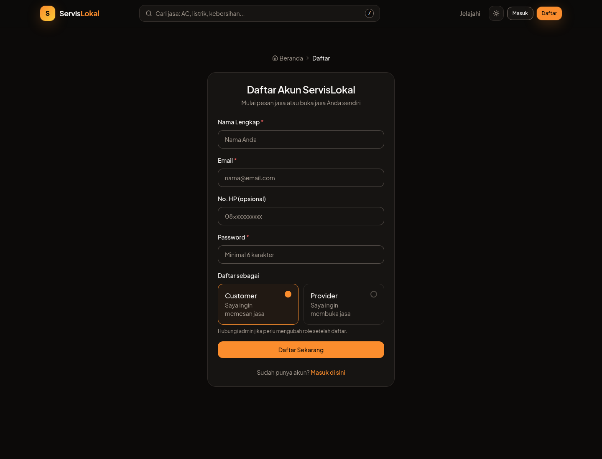
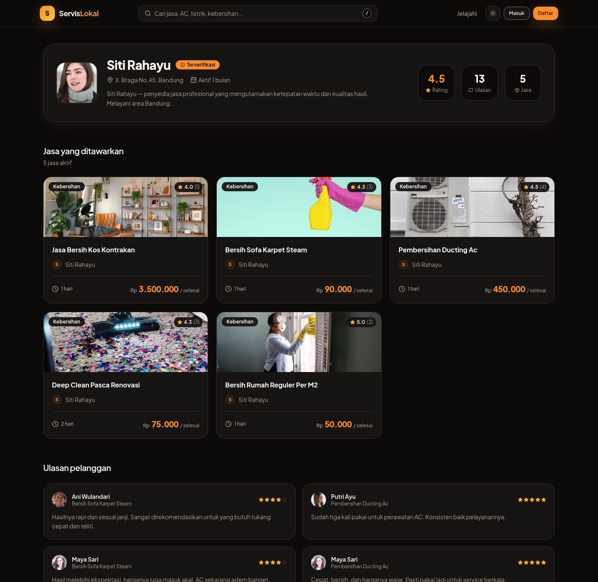
| Klaim | Bukti | Cara Verifikasi Juri |
|---|---|---|
| 3 pain point nyata (banding harga, takut ditipu, provider daerah tak terlihat) | Riset wawancara + observasi grup WhatsApp; dijabarkan di Hal. 2 dengan persona. | Bandingkan pengalaman memakai grup WA vs katalog JASAKITE. |
| 3 role dengan kebutuhan berbeda | Registrasi terpisah, 3 dashboard berbeda (Admin/Provider/Customer) — bukan satu dashboard untuk semua. | Register 3 role → jelajahi /dashboard/… |
| Provider daerah jadi terlihat | Profil publik + ulasan + katalog nasional 38 provinsi. | Buka /provider/{id}, cari “Bangka” di katalog. |
| Data nyata, bukan dummy | 46 jasa, 22 provider pada MongoDB Atlas — seed sesuai pasar Indonesia. | GET /api/services — respons JSON langsung. |
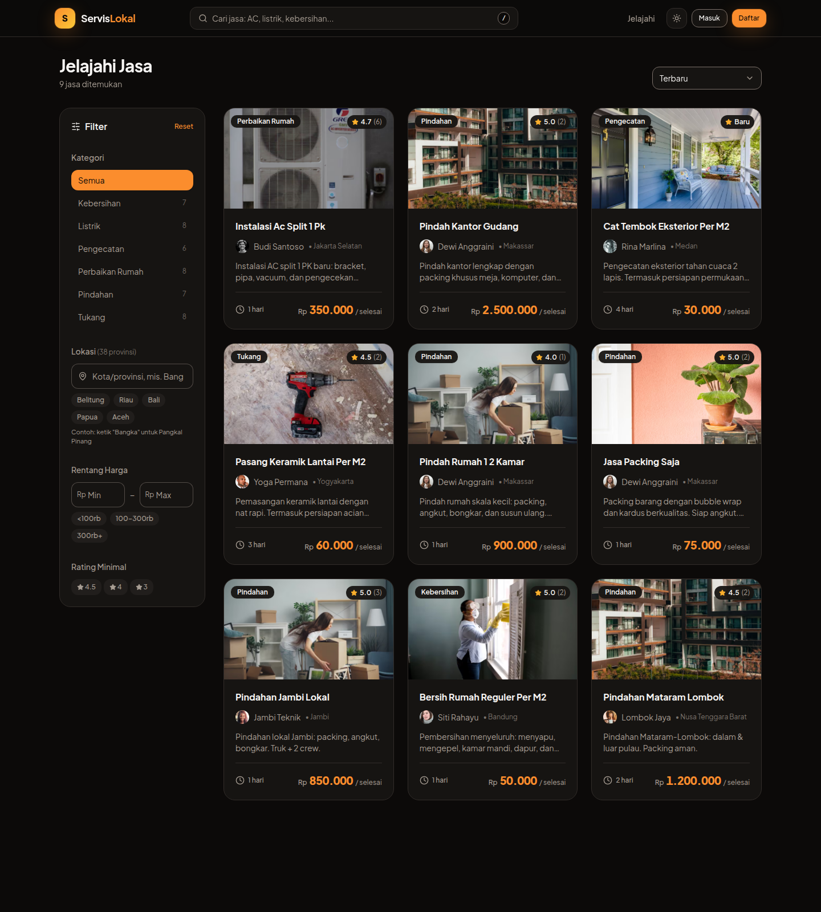
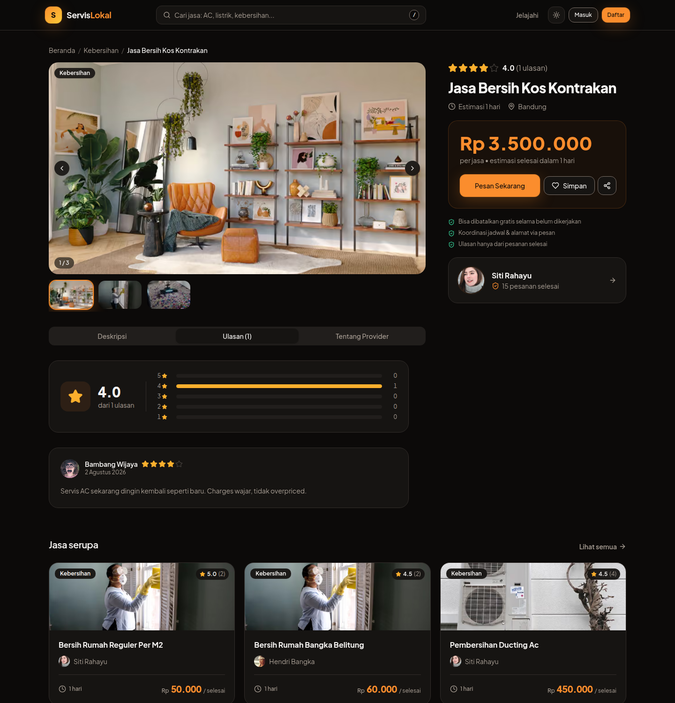
?tab=reviews — tab ulasan bisa di-share/di-bookmark| Fitur UX | Bukti Implementasi | Verifikasi |
|---|---|---|
| Search + debounce | Input dicari saat mengetik (debounce 400ms), riwayat pencarian tersimpan di localStorage, tombol “/” fokus pencarian. | Ketik di katalog, tekan “/”. |
| Skeleton + crossfade | File app/**/loading.tsx di 16 rute; animasi animate-content-in saat konten masuk — tanpa “pop”. | Throttle jaringan → muat /services. |
| Error boundary + retry | File app/**/error.tsx di 16 rute dengan tombol coba lagi, bukan layar putih. | Matikan koneksi → muat ulang. |
| Form validasi inline | react-hook-form + Zod; error per-field saat blur (register, checkout, form jasa). | Submit form kosong di /register. |
| Optimistic update | Simpan jasa & drag kanban berubah seketika — seperti aplikasi chat: layar dulu, server menyusul; rollback otomatis bila gagal. | Klik heart pada tile jasa. |
| Aksesibilitas | Focus trap (Radix Dialog), aria-live di notifikasi, prefers-reduced-motion dinonaktifkan. | Navigasi full keyboard (Tab/Enter/Esc). |
| Elemen UI | Bukti | Verifikasi |
|---|---|---|
| Design token HSL | Seluruh warna via CSS variable (app/globals.css) — bukan hex tersebar; dark mode mengikuti token yang sama. | Ganti tema di OS → seluruh situs ikut. |
| Kontras teruji | Test otomatis tests/color-contrast.test.ts memvalidasi rasio kontras token (primary-strong 5.0:1 > AA 4.5:1). | npm test — 149/149 lulus. |
| Tipografi fluid | Skala clamp() — hierarki utuh 320px→4K; tabular-nums untuk semua angka harga. | Resize jendela — judul tidak pernah pecah baris kasar. |
| 15+ komponen konsisten | Primitif Radix + shadcn-style di components/ui/ — radius, shadow, spacing seragam di semua halaman. | Bandingkan kartu katalog vs detail vs dashboard. |
| Motion disiplin | Easing expo-out via token lib/motion.ts; GSAP hanya di hero; crossfade skeleton→konten 0.4s. | Navigasi antar halaman — transisi halus. |
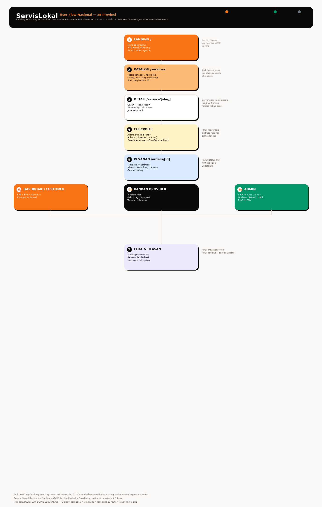
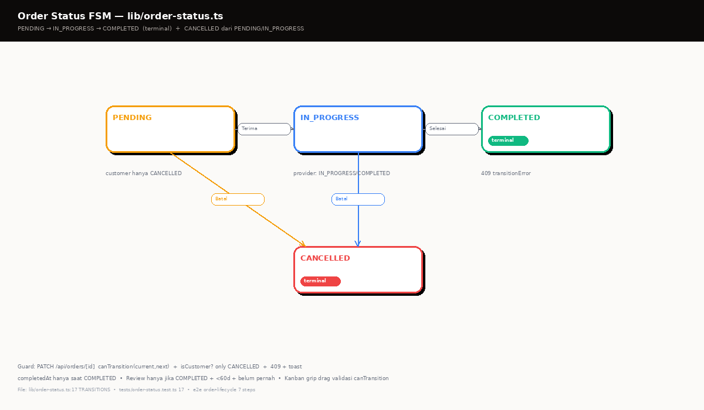
| Inovasi | Bukti di Kode | Verifikasi |
|---|---|---|
| WebGL 3D Orb | components/three/hero-orb.tsx (React Three Fiber, lazy-loaded — nol dampak LCP). | Gerakkan pointer di hero landing. |
| Kanban drag & drop | components/provider/order-kanban.tsx — DnD + arrow-key + optimistic. | Login provider → drag kartu pesanan. |
| PWA offline | public/sw.js + offline-indicator — situs terbuka saat offline. | DevTools → Offline → reload. |
| FSM status pesanan | lib/order-status.ts + test tests/order-status.test.ts — transisi ilegal mustahil di UI & API. | Lihat diagram FSM di atas. |
| Filter nasional | Kolom city ternormalisasi + lib/provinces.ts (38 provinsi). | Cari “Bangka” → Kep. Bangka Belitung muncul. |
| Rate limiting | Token bucket 13 aturan (lib/rate-limit.ts) + test dedikasi. | Spam login → 429 Too Many Requests. |
Bukti presentasi: prototype live (weblomba-rouge.vercel.app) · dokumen penjelasan ini (9 hal + 4 lampiran) · diagram user flow & FSM · analisis kompetitif 14 dimensi · script demo 5 menit — seluruhnya tersedia dan teruji.